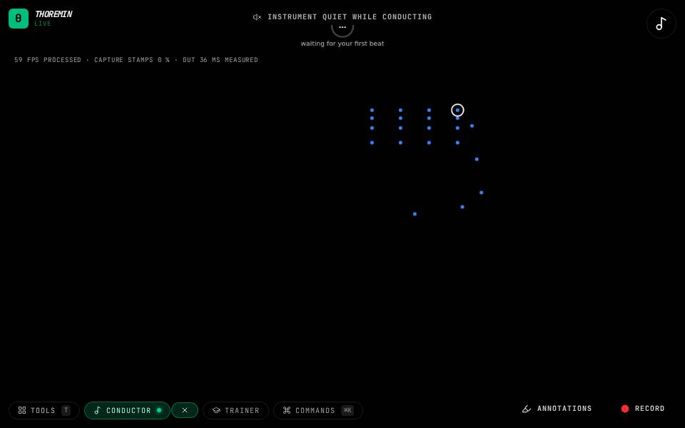

Instruments › Chords and harmony
Conduct the Chords

What to do
- Open the Conductor tool: a Haydn quartet is loaded.
- Beat time in front of the camera.
- The chords of the piece play on your beat, under the first violin's tune.
Conduct a chord chart: the chords play voice-led and arpeggiated on your beat.
How it works
This page is a short first version; the chord instruments are explained in full in the harmony pages of this guide.
Its settings: Chord chart. Every knob: the manual.